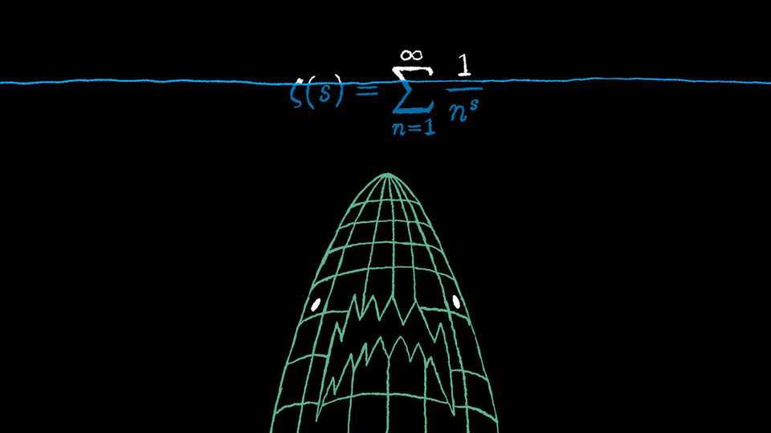
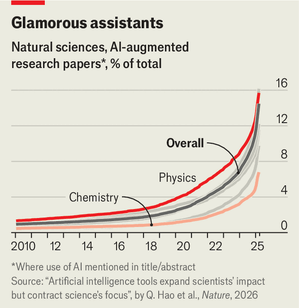
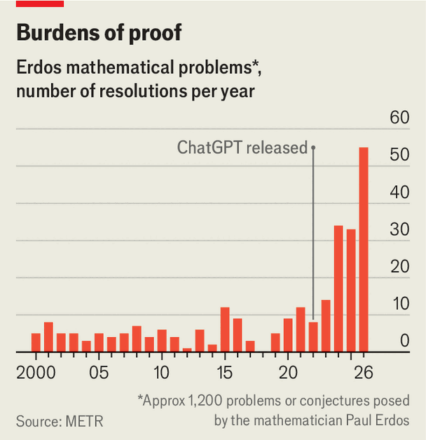

AI’s transformation of mathematics is a turning point for science
Other disciplines should take heed

Oct 15th 2026
“SOMETIMES PEOPLE have the wrong idea of maths and think that it will be overtaken by computers,” said the mathematician Alain Connes in 2000. He was describing why a team of esteemed mathematicians were offering $1m rewards for solutions to seven intractable mathematical conundrums. These Millennium Prize problems, said Dr Connes, “are totally inaccessible to computers”.
But computers got better. In early September OpenAI, an American firm, claimed one of its internal AI models had solved a Millennium Prize problem: the Navier-Stokes existence and smoothness problem, which relates to the motion of fluids. It was only the second of the lot to be conquered and the first to fall to a machine. Mathematicians had been wrestling with this one for at least a century. The AI solved it in 88 hours.
Then came what Álvaro Lozano-Robledo, a mathematician at the University of Connecticut, has called “possibly the single most important day in the history of mathematics thus far”. On October 6th OpenAI released a torrent of 719 papers detailing solutions the same model had found to at least 372 other long-standing open problems. No field of research has ever experienced an event like it.
Many mathematicians are not celebrating. “The shock is immense,” wrote Hugo Duminil-Copin, a mathematician at the University of Geneva, who won a Fields Medal (maths’ most distinguished prize) in 2022. “I am paralysed.” In a statement published soon after the Navier-Stokes announcement—and since endorsed by more than 8,000 researchers—Dr Duminil-Copin and 27 fellow Fields medallists described the situation as a “severe misalignment of AI in mathematics”. They worry about the risks posed by solutions divorced from human understanding. Left unchecked, says Martin Hairer of EPFL in Lausanne, Switzerland, another signatory, AI would “sterilise the field”.
That AI’s mathematical breakthroughs have prompted such reactions is, on its face, odd. Having answers to long-standing questions is an advance for humanity. Mathematicians also have a vested interest in resisting disruption to their careers. Their case is not entirely special pleading, though—and offers a preview of the uproar that could soon break out across science.
The objecting mathematicians argue that focusing on solutions neglects the importance of questing for them. Tackling open problems spurs on the invention of new tools and techniques, some of which might later prove useful beyond their initial purpose. For example imaginary numbers, which when squared have values less than zero, were described by 16th-century mathematicians as being as “subtle as they are useless”. They now underpin electrical engineering and quantum physics.
OpenAI’s new papers have failed, the mathematicians allege, to provide them with surprising ideas or new lines of inquiry. AI is not very good at explaining how it arrives at its results, says Luis Martínez-Zoroa, a mathematician at CUNEF University in Madrid and a leading expert on the Navier-Stokes problem. He describes the AI’s 166-page paper outlining its working as “a bit of a Frankenstein of different parts of research” that is far from clear.

Mathematics is not the only field facing disruption. An analysis of 41.3m papers from disciplines across the natural sciences, co-authored by James Evans at the University of Chicago and published in January, found that researchers are adopting AI at an accelerating rate (see chart). AI has already dramatically changed how theoretical physicists work, according to David Tong of the University of Cambridge. “In terms of calculating, it’s just obvious you turn to an LLM,” he says. “That wasn’t true three months ago.” On September 25th Anthropic, another AI firm, announced that its model, Claude, had pushed the frontier in calculating the interactions between certain sets of particles.
Scientists adopting AI appear to be finding success: Dr Evans’s study showed that those who use the technology publish more and attract more citations. Yet, while a boon for individuals, AI use shrank the range of topics studied by almost 5% and cut scientists’ engagement with each other’s work by 22%. That aligns with the findings of a recent survey of over 600 scientists conducted by Google. Almost half of the respondents said AI pushes them towards safer, more incremental projects that are guaranteed to produce publishable results in short order. Only 28% thought AI was enabling them to pursue more speculative work.
Other risks arise as AI plays an ever bigger role in science, says Hector Zenil, a computer scientist at King’s College London. Writing in Frontiers in Artificial Intelligence, in February, Drs Zenil and Evans envisage a future in which AI models (with some robotics thrown in, too) close the scientific loop, meaning they become capable of autonomously taking measurements, forming hypotheses, testing them in the lab and evaluating their findings before beginning the process again. The researchers warn that could push science into strange new territory where machine-driven research ceases to be legible to humans.

It may still be possible, in such a world, to check the machines’ results are correct, and perhaps even make use of them. Scientists, says Dr Zenil, might thus become like archaeologists, following up AI discoveries and trying to work out how they were achieved. Dr Tong, who is optimistic that AI will be a force for good, nonetheless warns that “I’m not sure we’re really prepared for what’s coming in six months or a year.” Theoretical physics is a close relative of mathematics, so is the most ripe of the sciences for similar disruption.
Mathematicians are not jobless yet, though. The very opacity of OpenAI’s results promises plenty of work verifying AI’s methods and identifying which approaches prove most fruitful. What’s more, say mathematicians, good as AI is at problem-solving, it still struggles with creative work; whether an AI could have invented imaginary numbers, for instance, remains unclear. Yet as Dr Connes is finding out, scientists underestimate the potential of the technology at their peril. ■